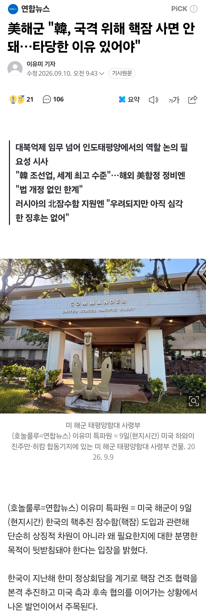
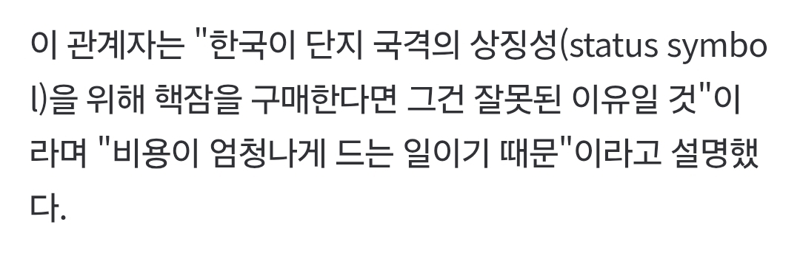

https://n.news.naver.com/article/001/0016301634?cds=news_edit
핵잠있다도르 하지말고 어디에 쓸건지
확실하게 하고 도입해야 한다는 충고


https://n.news.naver.com/article/001/0016301634?cds=news_edit
핵잠있다도르 하지말고 어디에 쓸건지
확실하게 하고 도입해야 한다는 충고
트럼프대왕함으로 작명한다하면 트럼프바로 오케이박을듯
또또 지랄이네 북괴놈들이 러시아한테 받은 기술로 핵잠에 핵무기 탑재하고 느그 캘리포니아 앞바다까지 와서 발사관 열면 그때가서 왜 핵잠 안만들었냐고 지랄하지 말고 느그 건함 계획이나 잘 챙기쇼
병신급 함선 3연타 건조로 해군력 장애 만들어 놓는 새끼들이 뭐래
러시아랑 중국 견제하는 역할하라고 대놓고 말하네
너내가 앞으로 이런소리 못하게 할라고 가져야겠다!
병신인가? 북한이 핵잠 만들고 있다고 보여주면 우리도 당연히 핵잠 만들어야지. 밥이랑 산소만 충분하면 수십년동안 바다위로 안 올라와도 되는게 핵잠인데, 뭐. 디젤식 잠수함 수십 척 동원해서 그것만 추적하리? 시발 좆럼프새끼 대가리에 우동사리만 처 들었나??
대충 틀린 말은 아닌데 .... 국뽕을 채우기 위해서 항공모함을 구입하는것 보다는
주변국 견제를 위해서는 핵추진 잠수함 이상가는게 없음 <- 이게 가장확실한 목적
러시아 북한 중국
어디에 쓸꺼긴 씨발련아 핵잠에 핵장착한 SLBM 떄려박아서 핵쏠라고 그런다
핵잠 사는데 이유가 어디 있어 가지고 싶으니 사는 거지
ㄹㅇ 태국해군도 정치적 목적에 의해서 항모굴리고 다니는데 ㅋㅋㅋㅋ '이 동네에서는 우리가 왕이니까 깝치지마 베트남 라오스 캄보디아 씨발년들아 ㅋㅋ'
그래서 우리도 그런 독재 왕조 국가랑 같은 취지로 도입해야함?
중국이나 러시아에 주고싶은 정치적 메세지가 있을땐 도입할수있는거지
'너거덜 주요시설 쥐도새도 모르게 미사일로 조져버릴수있으니 지랄 노'이런식으로
뭔 독재타령이야 태국은 하나의 예시인거고
맥락 파악 못하는걸보니 지능 좀 떨어지고 학교나 회사에서 ㅍ급취급받는놈같네
우선 쥐도새도 모르게 미사일로 조져버릴 수 있는건 TEL로도 충분히 가능함.
그리고 지금 도입하는건 공격원잠인데 니가 말하는는건 SSBN(탄도미사일 탑재 원잠)임. 지금 도입할려고 하는건 어뢰발사관으로 하푼이나 발사하는거임
태국이 바다 존나 좁아서 항모보단 불침항모인 공항을 여러개 짓는게 이득인데 인도네시아가 항모 도입한다고, 우리도 질수 없지 이러고 도입하는게 쓸데없는 독재국가식 예산낭비인데
그 예산낭비를 우리도 하자는 거에서 부터 한번웃고
정작 그렇게 만든게 탄도미사일 발사용이 아니라 장거리 해상초계용인데 그걸로 러중 지상시설에 대해 협박할 수 있음이라고 하는거에서 두번웃는다ㅋㅋㅋㅋㅋ
어 그래 밀덕새꺄 존나 잘났다
니는 뉴스도 안보나ㅋㅋㅋㅋ
응 인생유일업적이 군사정보 좀더 잘알아요 ㅋㅋㅋㅋ 방구석 참모총장님 충성 ㅋㅋ
그냥 뉴스만 봐도 아는건데 이걸 몰라서 반진성주의 마냥 이지랄하는거 보니 우리나라도 트럼프 같은 놈이 대통령 되는거 멀지 않았네ㅋㅋ 아 이미 된건가?
태국 인도 중국 일본 다 항모 있음
근데 우린 없음 만들어도 운용할 인원 없음
그럼 뭐다? 핵잠수함 밖에 없다
전에도 이야기 했는데 대양해군 건설할거 아니면 핵잠 도입할 예산으로 재래식 여러척 건설하는게 훨씬 유리함
그리고 대양해군을 건설해서 실질적인 영향력을 행사하고 싶으면 우선 씹창난 인력풀부터 확보해야하고
뭐가되든 핵잠확보는 후순위로 밀림
병력은 자꾸 줄어가는데 장비에만 자꾸 투자하면 중동왕조 군대꼴남, 아무리 좋은 장비로 무장해봤자 그걸 굴릴 숙달된 인원양성이 안되면 그냥 쓰레기됨
한 삼십년후에 대양함대를 건설할거면 지금 기술실증용으로 확보하는건 나쁘지 않은데, 그럴거면 동시에 병력확보에 관한 방안도 같이 생각해야함
아 사지 말고 만들어라?
아! 큰 뜻을 몰라보고!
전쟁할꺼아니면 다 있다도르 아님?
그..이유를 만들어 드려?
미 해군은 한 10년 전부터 지금까지 똑같이 충고해왔음. 핵잠 도입하는데 드는 돈이면, 함대를 하나 새로 만들 수도 있는데, 함대 하나를 포기하고 핵잠을 도입할 거냐? 라고.
핵무기면 몰라도 핵잠은 굳이…
핵잠이 진짜 억제력임 보통...
지상의 미사일 기지에서 쏘는 핵미사일은 무조건 대비하고있고 탐지가 쉽고(위치가 고정이니까) 요격도 수월함.
하지만 핵잠에서 쏘면???? 이놈 음식보급 받을 때 빼고 30일을 바다 속에 있는데 위치 모름.
저 넓은 바다를 다 감시할수 없기에 핵미사일이 초기에 발각 안됨. 목표 타격 확률 극단적으로 올라감.
핵잠+핵미사일 전쟁나면 일단 서로 뒤지는 거의 확실한 카드 = 억제력임
연료도 연료지만 추적하기 까다로워서 그런게 큰거 아니얌? 디젤로 가는 잠수함은 시끄러워서 추적된다 머 이런거 아니엿남